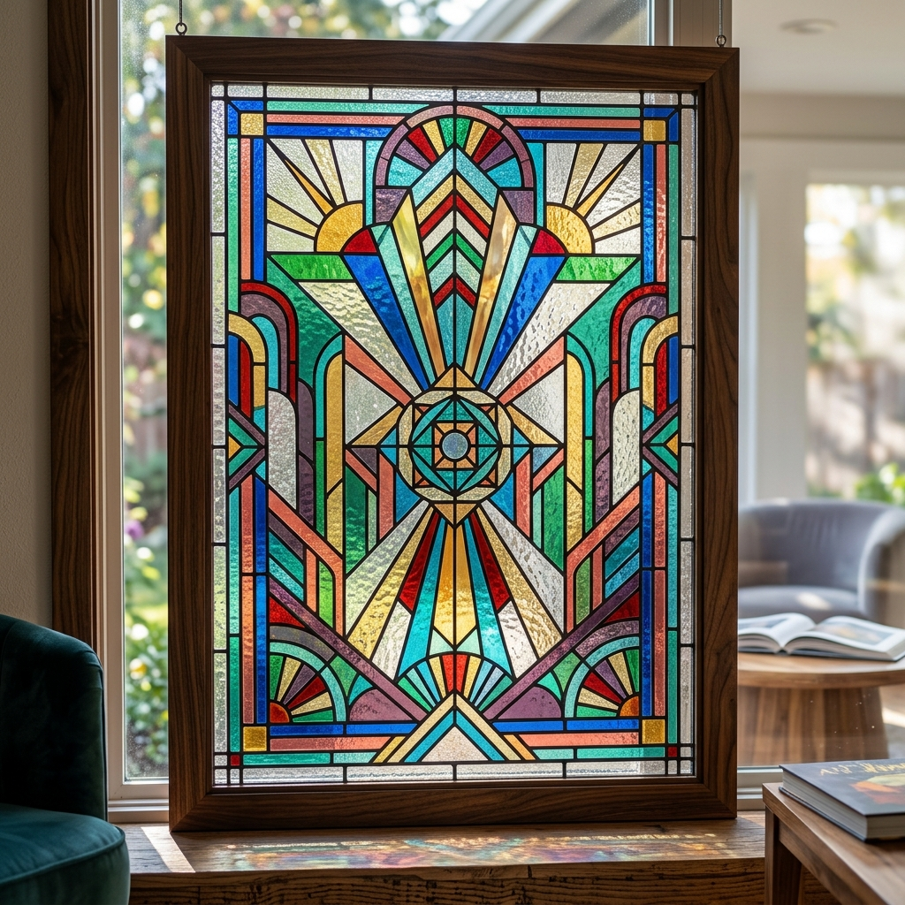
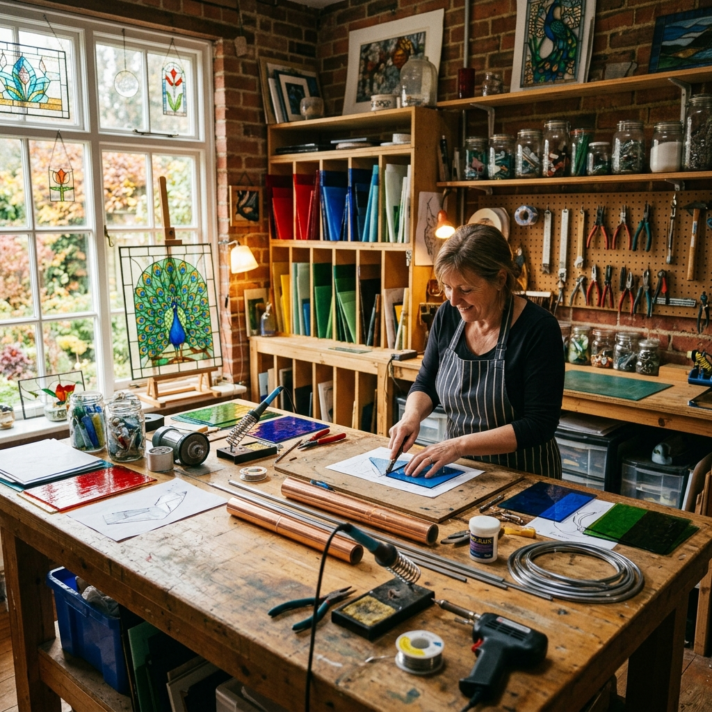

Master Craftsmanship
LIGHT & LEAD
BROUGHT TO LIFE.
Specializing in the meticulous restoration of historic windows, breathtaking custom commissions, and masterclass workshops.
Our Specialties
Restoration
Preserving history by carefully repairing, cleaning, and re-leading antique stained glass panels and cathedral windows.
Learn MoreCommissions
Collaborate with our studio artists to design and build stunning, one-of-a-kind stained glass pieces for your space.
Start a ProjectSuncatcher Shop
Browse our selection of pre-made, artisanal suncatchers and small panels to instantly add vibrant color to any room.
Shop NowFeatured Works



Historic Cathedral Restoration

Learn The Art
Studio Workshops
Whether you are a complete beginner looking to make your first suncatcher, or an intermediate artist wanting to master the copper foil technique, our classes provide hands-on experience in a professional studio.
- Beginner Stained Glass Basics
- Advanced Lead Came Construction
- Glass Cutting & Grinding Mastery
The Process
Consultation
We discuss your vision, dimensions, and color palette, resulting in a detailed pattern mockup.
Glass & Cut
Selecting the perfect textured glass, which is then meticulously hand-cut and ground.
Soldering
Pieces are wrapped in copper foil, soldered together securely, cleaned, and polished to a shine.
Need a Repair Estimate?
Have a broken panel or a historic window needing attention? Send us a photo and dimensions for a free, no-obligation restoration estimate.